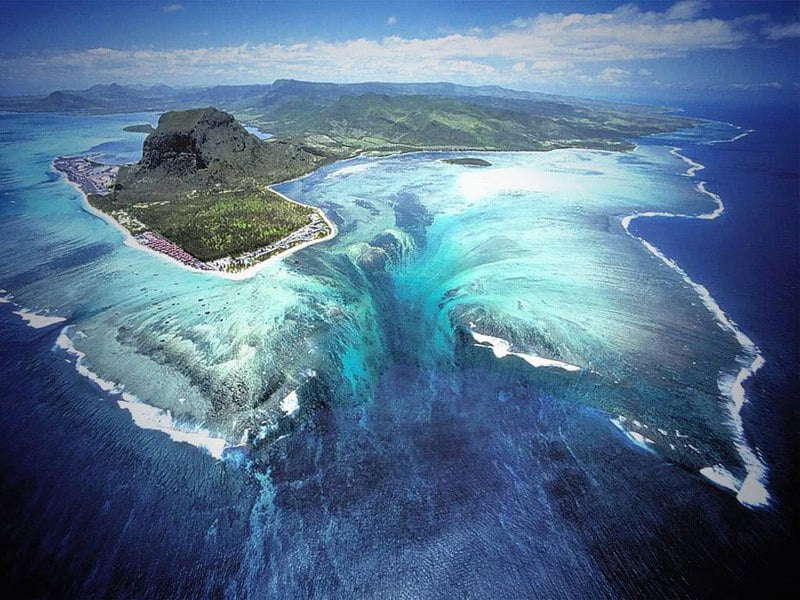
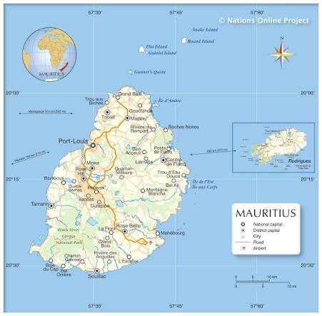

Toutravel was made to share some interesting places in Mauritius. The most scenic place, the most romantic place or the most relaxing place; if you want to know to such locations in Mauritius, Toutravel is here to guide you.


Mauritius is often called paradise on Earth by many visitors. The warmth of the locals to foreigners is always mentioned by departing tourists.
As a tropical island, Mauritius has many beaches which in many countries is not easily seen, especially inland countries.
Therefore, we take very good care of our beaches. Some of our most popular ones are Mont Choisy, Pereybere, Flic-en-Flac, amongst others.
Additionally, Mauritius is home to some endemic species of fauna and flora, making it a great place to welcome nature enthusiats.
Those endangered species are kept bred in captivity and then released in the forests to repopulate as they have been close to extinction for a long time.
Hence, it is illegal to hunt those animals.
Mauritius also has a rich history of slavery and labour done before independence. Mauritians are mainly descendants of either slaves or indentured labourers.
Therefore, mauritians have a huge amount of cultures and traditions. Even though people may be of different origins, we all celebrate together for other cultures, not as individuals, but as mauritians.